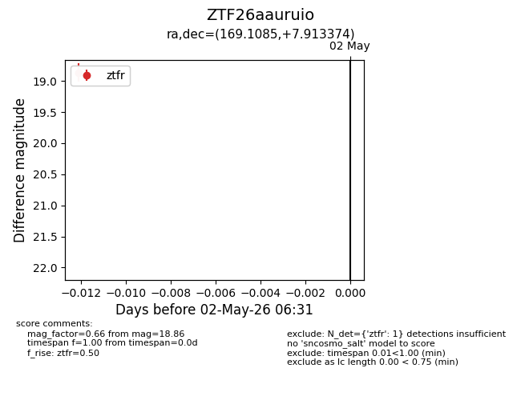
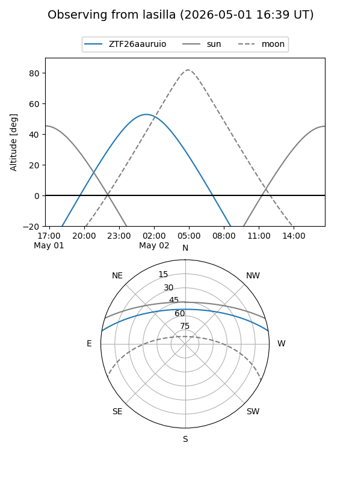
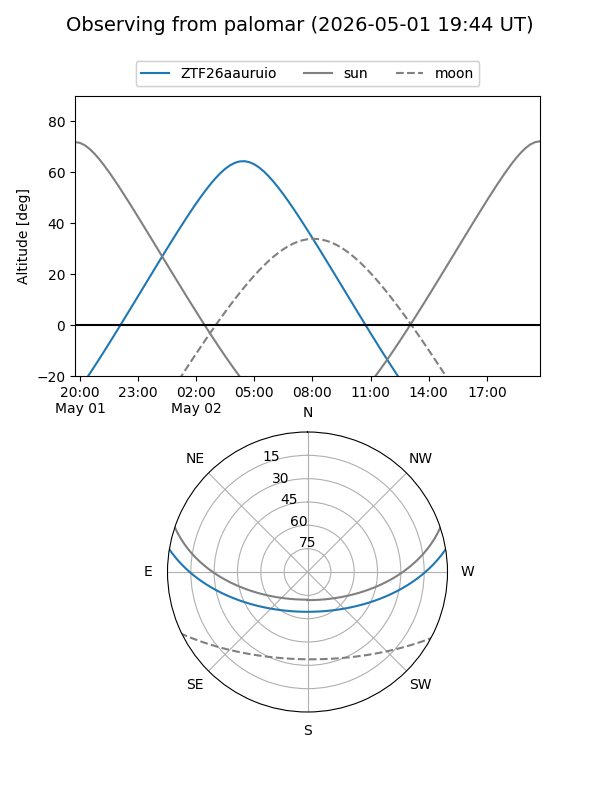

ZTF26aauruio
Target ZTF26aauruio at 2026-05-02 06:41
Aliases and brokers:
FINK: link
Lasair: link
ALeRCE: link
alt names
ZTF26aauruio (ztf,fink_ztf)
Coordinates:
equatorial (ra, dec) = 169.1085,+7.91337
equatorial (HMS+DMS) = 11:16:26.05,+07:54:48.15
galactic (l, b) = (249.0280,+60.41579)
Flags:
Photometry:
last ztfr=18.86
1 ztfr detections
Lightcurve

Visibility


Additional plots